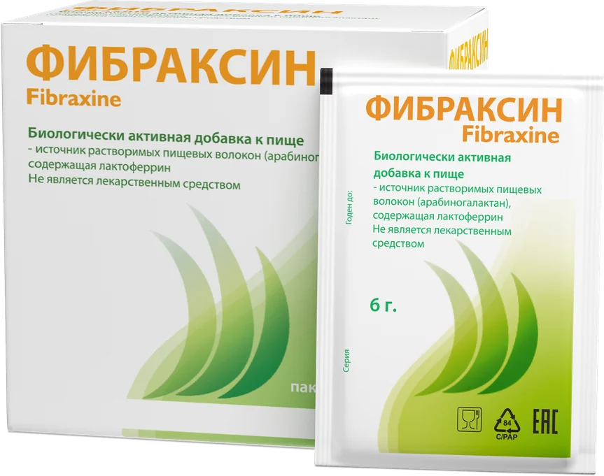
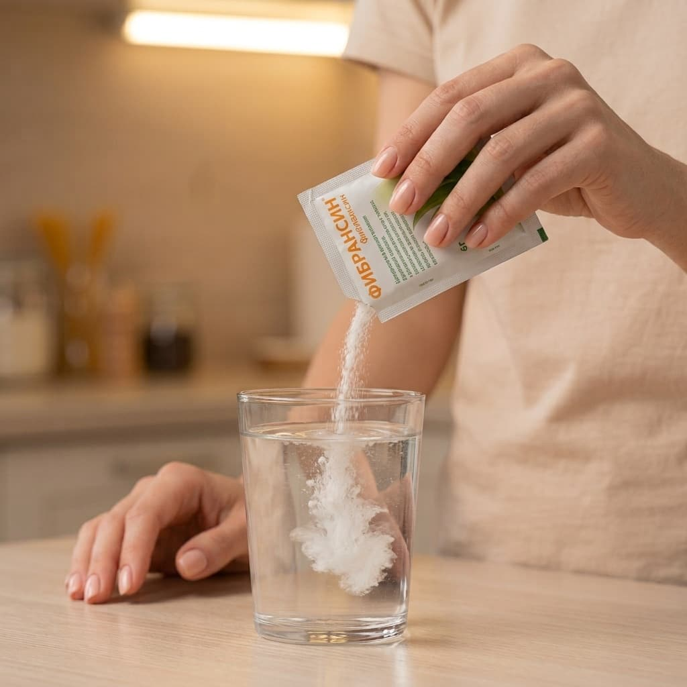
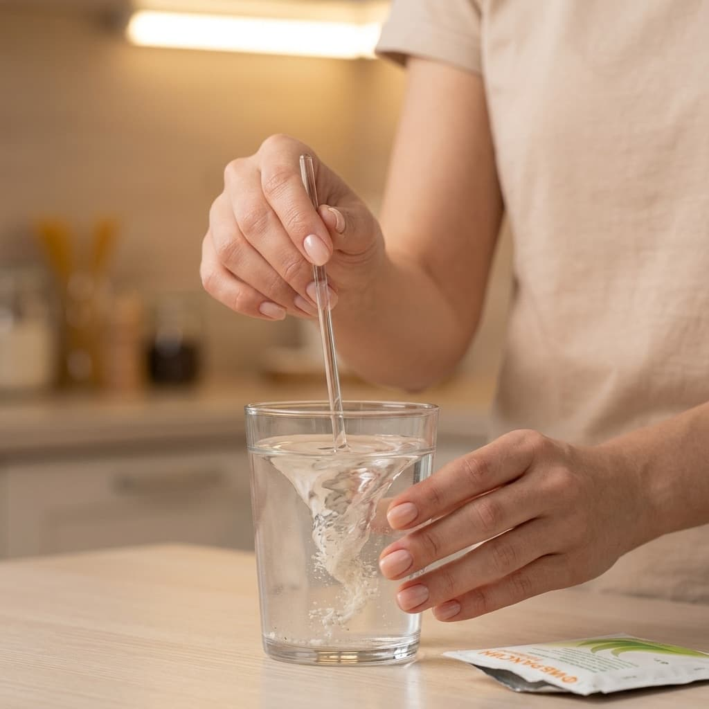
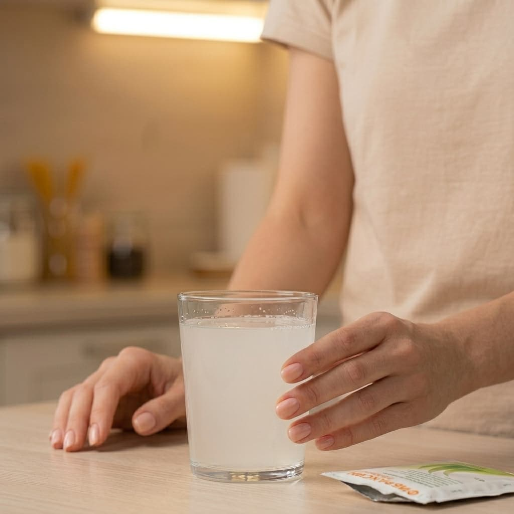
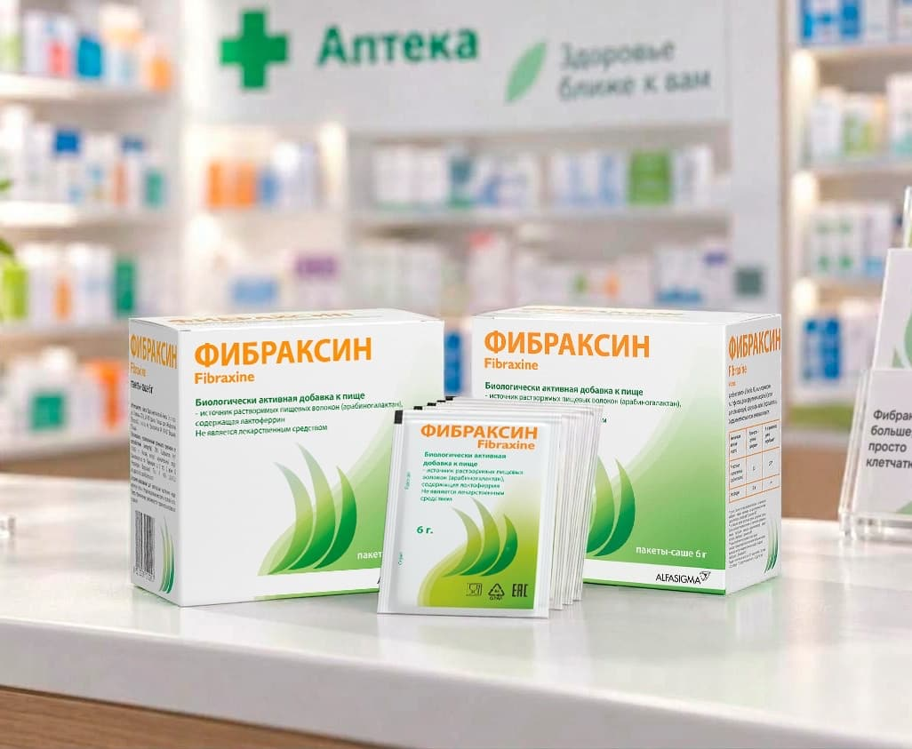

Лусинэ
«Классное средство, через месяц кишечник работает как по часам, ещё и похудела на 3 кг!»
Смотреть на apteka.ruВключи простую* поддержку организма в фоновом режиме
Без лишнего контроля
*1 раз в сутки

Где купитьУколы для снижения веса уменьшают чувство голода, но одновременно с этим тормозят моторику желудка и кишечника. Фибраксин за счёт мягкого действия на микробиоту и продукцию КЦЖК помогает кишечнику работать в естественном ритме

В чём проблема
Аппетит падает, а привычные порции сокращаются в 2–3 раза
Почему так происходит
Из рациона обычно выпадают салаты и овощи, потому что они могут вызывать тяжесть в желудке. Полезные бактерии остаются без достаточного питания. Из-за этого меняется состав микрофлоры и постепенно нарушается защитный слой слизи в кишечнике
Как помогает Фибраксин
Одно саше помогает восполнить нехватку растворимых ферментируемых пищевых волокон. Полезная микрофлора получает нужный субстрат для питания и выработки КЦЖК, а слизистый барьер сохраняет свою целостность. И всё это без лишних калорий в рационе
Где купить
В чём проблема
Одним из нежелательных явлений при медикаментозном снижении массы тела является запор или нерегулярный стул
Почему так происходит
При использовании инъекций замедляется эвакуация пищи из желудка, может снижаться тонус гладкой мускулатуры кишечника. Пища движется медленно, стенки кишки забирают из неё почти всю воду, и каловые массы становятся сухими и плотными
Как помогает Фибраксин
Растворимые волокна лиственницы (арабиногалактан) питают нормальную микрофлору и ферментируются с образованием КЦЖК, что способствует поддержанию тонуса кишечной стенки и удержанию влаги. В результате стул остаётся пластичным
Где купить
В чём проблема
Почти каждый пятый пациент на терапии страдает от болей и спазмов в животе, а вздутие, диспепсия и отрыжка входят в число постоянных жалоб
Почему так происходит
Нередко начинается брожение пищи, которая дольше обычного находится в ЖКТ, что может сопровождаться газообразованием, вздутием и забросом желудочного содержимого в пищевод
Как помогает Фибраксин
Арабиногалактан ферментируется (расщепляется) микрофлорой медленно и равномерно на всём протяжении толстой кишки. Он не даёт избыточного газообразования в отличие от многих других пищевых волокон
Где купитьВ чём проблема
Тошнота может возникать у 24–44% людей, получающих инъекции для похудения, поскольку пища задерживается в желудке дольше, в среднем на 70 минут
Почему так происходит
Эвакуация пищи из желудка происходит медленнее обычного. Вследствие этого густая или грубая еда может вызывать тяжесть, тошноту, распирание под рёбрами или даже позывы к рвоте
Как помогает Фибраксин
Фибраксин полностью растворим в воде и не образует вязкий гель, как многие другие пищевые волокна. В результате он проходит через желудок так же быстро, как обычная вода
Где купить
В чём проблема
На инъекциях аппетит заметно снижается и привычные порции сокращаются в 2–3 раза, что может постепенно приводить к развитию дефицита железа и других нутриентов
Как помогает Фибраксин
В составе Фибраксина белок естественного происхождения лактоферрин. Он связывает и транспортирует железо из кишечника, регулирует его всасывание и усвоение организмом, а так же, как и меди, цинка
Где купить
В чём проблема
После снижения веса или курса инъекционной коррекции голод и «пищевой шум» часто возвращаются. После отмены ГПП-1 вес нередко набирается снова
Почему так происходит
Терапия снижает аппетит и усиливает сытость, но после её отмены возвращаются голод, тяга к калорийной пище и старые привычки
Как помогает Фибраксин
Арабиногалактан поддерживает сытость, а лактоферрин помогает снижать жировые отложения. Вместе они мягко помогают держать под контролем питание и вес
Где купитьИнъекции для снижения веса работают через кровоток, а компоненты Фибраксина действуют в кишечнике и помогают организму легко переносить инъекционную терапию
Инъекции работают через кровь, а арабиногалактан и лактоферрин действуют исключительно внутри кишечника.
Компоненты Фибраксина не всасываются в кровь, не меняют концентрацию лекарства в организме и не ослабляют эффект снижения веса
В отличие от грубых волокон, формула Фибраксина не препятствует всасыванию витаминов, минералов и сопутствующих нутриентов — питательные вещества продолжают нормально усваиваться даже из диетического меню.
Комплекс укрепляет плотные контакты эпителия, поддерживает барьерную функцию кишечника и защищает стенки ЖКТ от раздражения
Компоненты Фибраксина действуют сообща, способствуя нормализации функции кишечника и улучшению усвоения железа в период снижения веса на инъекциях
Принимайте Фибраксин во время любого удобного приёма пищи



Курс, который легко впишется в любой график
Не менее 1 месяца
Укажите, сколько порций из каждой группы продуктов вы съедаете в среднем за неделю — передвигайте ползунки. Результат пересчитывается сразу: сколько пищевых волокон (ПВ) вы получаете из питания в неделю и в день и какой это процент от нормы (30 г/сутки)
Порций в неделю
Укажите количество порций хотя бы по одной группе.

Чем Фибраксин дополняет рацион
Больше, чем просто клетчатка
1 саше в день — 5,5 г арабиногалактана. В расчёт и на шкалу не входит — калькулятор считает только питание.
Где купитьО комфорте кишечника, контроле аппетита и лёгкости в теле без лишних усилий
Лусинэ
«Классное средство, через месяц кишечник работает как по часам, ещё и похудела на 3 кг!»
Смотреть на apteka.ru
Светлана
«Отличный пребиотик, который не только нормализует микрофлору, останавливает диарею и убирает запор, но и очищает лицо от прыщей у подростков, а также помог нам при анемии. Суперсредство для всей семьи, которое всегда в нашей аптечке.»
Смотреть на apteka.ru
Наталия Тютина
«Выписал врач для восстановления микрофлоры кишечника. У меня дивертикулярная болезнь, нужно пить его каждые три месяца. Отличный препарат, хорошо разводится в воде, вкус нейтральный. Мне помогает. Рекомендую.»
Смотреть на zdravcity.ru
Светлана Н.
«Всегда держу в аптечке, так как это палочка-выручалочка для всей семьи для нормализации стула (останавливает диарею или убирает запор), у ребёнка-подростка и взрослого очищает кожу лица от прыщей (делает прямо бархатистой). Сейчас заказываю систематически плюсом для мамы, у которой анемия, для дополнительного комплексного лечения по рекомендациям доктора.»
Смотреть на ozon.ruЗаказывайте с доставкой до двери или бронируйте в ближайшей аптеке
Препарат продаётся в аптеках и на маркетплейсах. Это оригинальный европейский продукт, поставляемый напрямую от производителя
Скидки и спецпредложения в аптеках-партнёрах — собрали их на одной странице

Разбираем частые ошибки в питании, объясняем причины тошноты и делимся советами, как сохранить лёгкость и регулярный стул в течение всего курса
Всё о составе Фибраксина и действии его компонентов при приёме во время инъекционной терапии коррекции массы тела
Да, можно. Фибраксин содержит растворимую пребиотическую клетчатку — арабиногалактан, которая помогает поддерживать регулярность стула и обычно переносится легче, чем грубые волокна
Фибраксин не является осмотическим слабительным, как макрогол и лактулоза. Назначение слабительного должно осуществляться врачом. Фибраксин содержит водорастворимую клетчатку арабиногалактан — мягкий источник растворимых пищевых волокон для регуляции стула
Фибраксин не образует геля, как псиллиум и отруби, поэтому обычно не усиливает дискомфорт от инъекций. Если возникают сильные побочные эффекты от инъекций, рекомендуется начинать приём Фибраксина в дни с меньшим дискомфортом
Компоненты Фибраксина не являются установленными причинами непроходимости. Важно соблюдать инструкцию по приготовлению и приёму саше, указанную в листке-вкладыше, и разводить Фибраксин в достаточном количестве жидкости или йогурта. При наличии нарушений моторики кишечника или существующем сужении необходимо обратиться к врачу
Необходимо обратиться к врачу при сильной или нарастающей боли, заметном вздутии, многократной рвоте, твёрдом болезненном животе, невозможности опорожнения кишечника и газов, появлении крови в стуле, обезвоживании или стойком запоре. Эти симптомы требуют незамедлительного медицинского вмешательства
Растворимое пищевое волокно переносится легче, чем грубая клетчатка. Порошок Фибраксина растворяется в стакане напитка или йогурте, не загустевая и проходя через желудок без задержки и тяжести. При активной тошноте или рвоте следует обсудить симптомы с врачом
Да, такая комбинация возможна. Однако рекомендуется согласовать её с врачом. Мы советуем делать интервал в 1 час между приёмами Фибраксина и слабительного. При многодневном запоре предпочтительнее сначала разобраться в первопричине
Обязательный интервал времени между инъекцией и приёмом Фибраксина не установлен. Рекомендуется дождаться уменьшения тошноты и начинать принимать Фибраксин в дни с более комфортным самочувствием, чтобы точнее отслеживать своё состояние. Не рекомендуется принимать Фибраксин при рвоте в результате инъекции